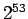

จากที่เลขจำนวนเต็มมีการแสดงค่าจากเลขที่น้อยที่สุดถึงเลขที่มากที่สุด ที่เป็นค่าเฉพาะของเลขนั้นๆ ในส่วนของเลข Floating Point เป็นการแสดงค่าโดยประมาณของเลขนั้นๆ เนื่องจากค่าต่างๆ ระหว่างเลข 0 และ 1 สามารถมีค่าต่างๆ ได้เป็นอนันต์ โดยสามารถแสดงความละเอียดของเลขได้ไม่เกิน  ระดับ เราพยายามให้สามารถแสดงค่าที่ใกล้เคียงมากที่สุด
การปัดเศษสามารถแก้ไขปัญหาได้อีกระดับหนึ่ง โดยเพิ่มบิตในฮาร์ดแวร์เพิ่มเติม ใน IEEE 754 มีบิตเพิ่มเติม 2 บิตที่มีชื่อว่า guard และ round บิต โดยแสดงการใช้งานดังต่อไปนี้